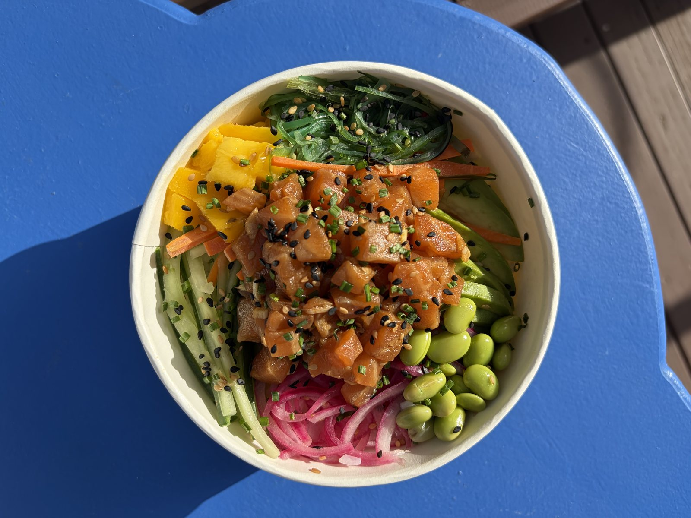
Onigiri
El triángulo de arroz japonés que nos da nombre, con rellenos que cambian y sorprenden. Perfecto para llevar.
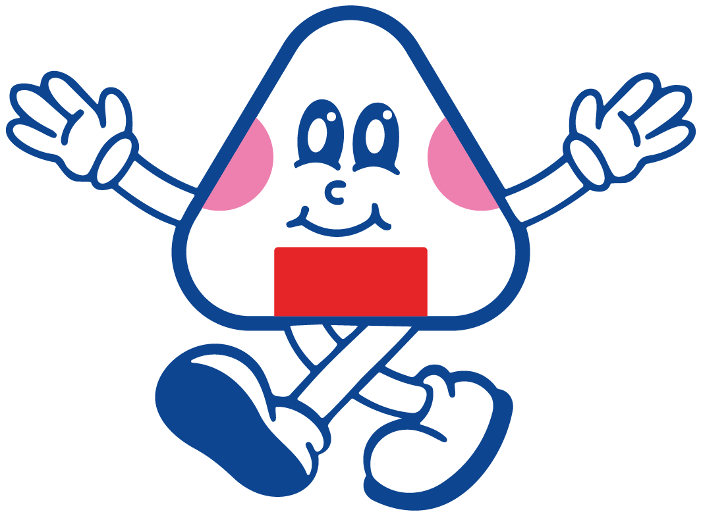
Onigiri, handrolls, poke & matcha
Sushi fresco hecho cada día en Barbate 🍙
Cocina japonesa hecha con mimo y con producto fresco de la zona — porque estando en Barbate, la capital del atún, sería un crimen no aprovecharlo.

El triángulo de arroz japonés que nos da nombre, con rellenos que cambian y sorprenden. Perfecto para llevar.
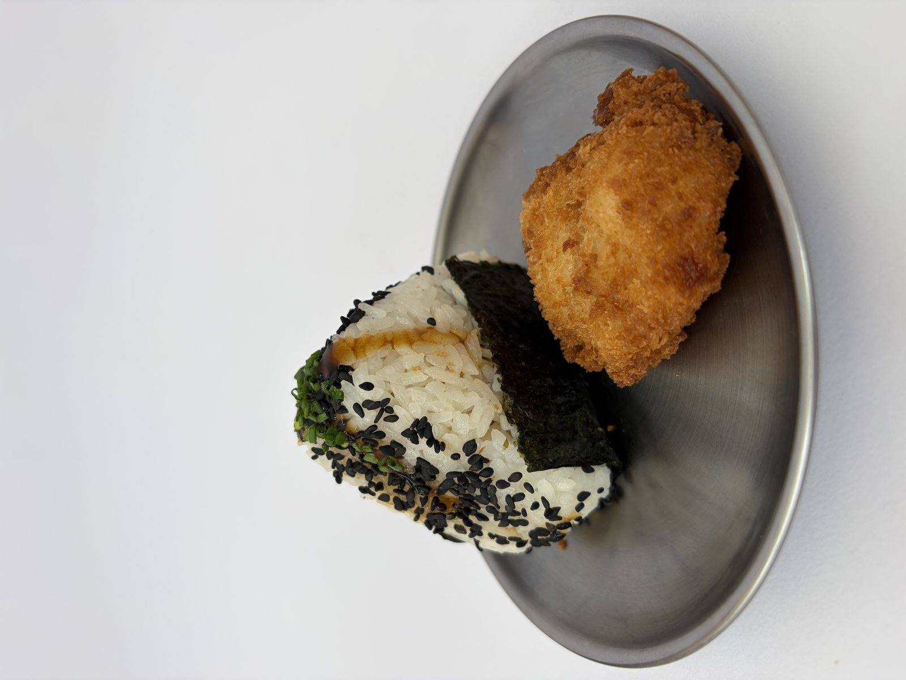
Rollos de nori crujiente rellenos al momento: atún, salmón, tempura... Nuestro formato estrella.
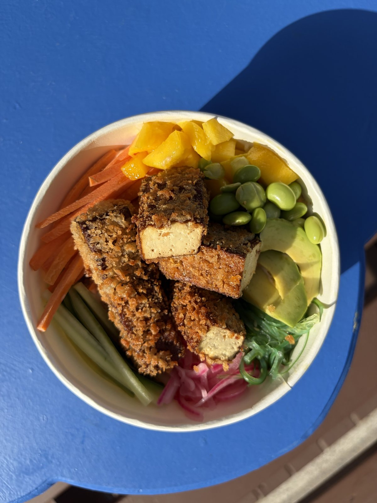
Bowls frescos y coloridos con arroz de sushi, pescado o tofu, fruta y verduras crujientes.
Matcha ceremonial batido al momento: solo, con leche, iced... El ritual japonés en pleno Paseo Marítimo.
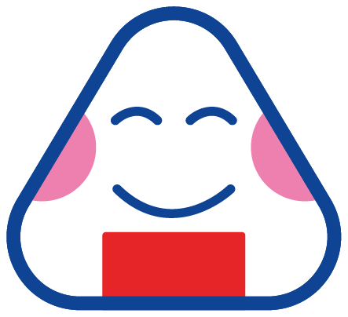
El onigiri es el bocado más querido de Japón: un triángulo de arroz japonés, moldeado a mano, relleno de sabores intensos y abrazado por alga nori crujiente. En Japón se come a diario — de camino al trabajo, en un picnic, a cualquier hora.
En ONIGUIRIS lo preparamos como se debe: arroz en su punto, rellenos generosos y nori que cruje de verdad. Y le sumamos handrolls, poke y matcha para completar el viaje. ¿Nuestro secreto? Producto fresco de aquí, técnica de allí.
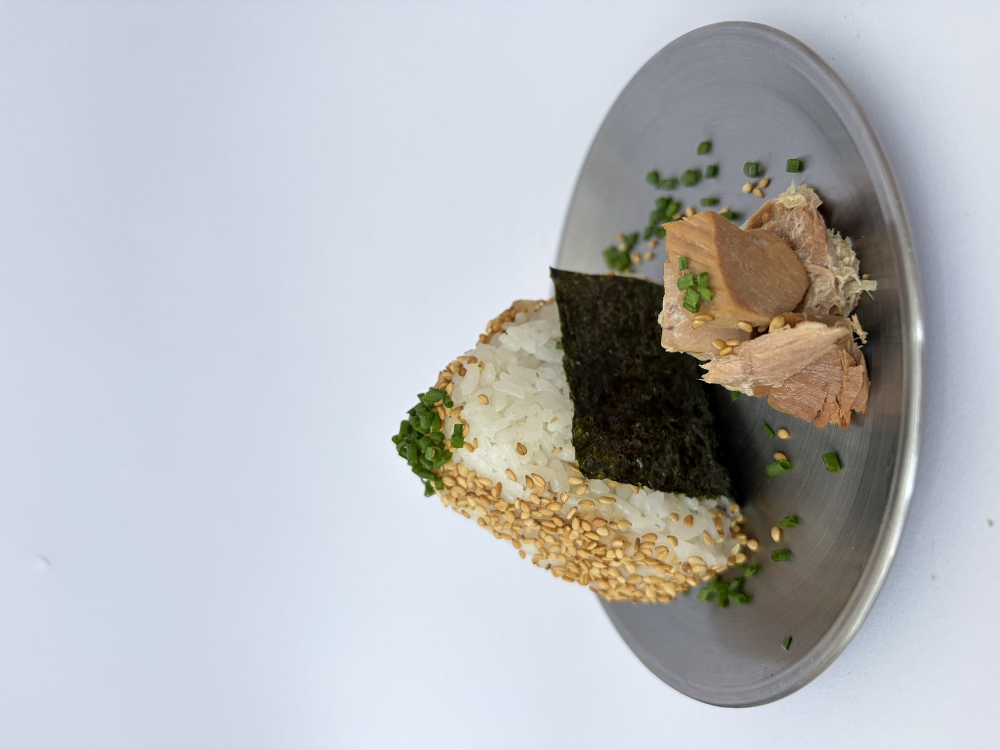
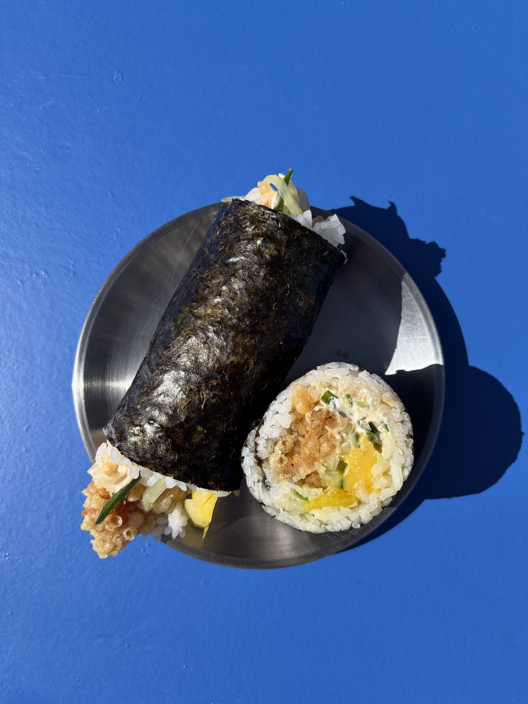
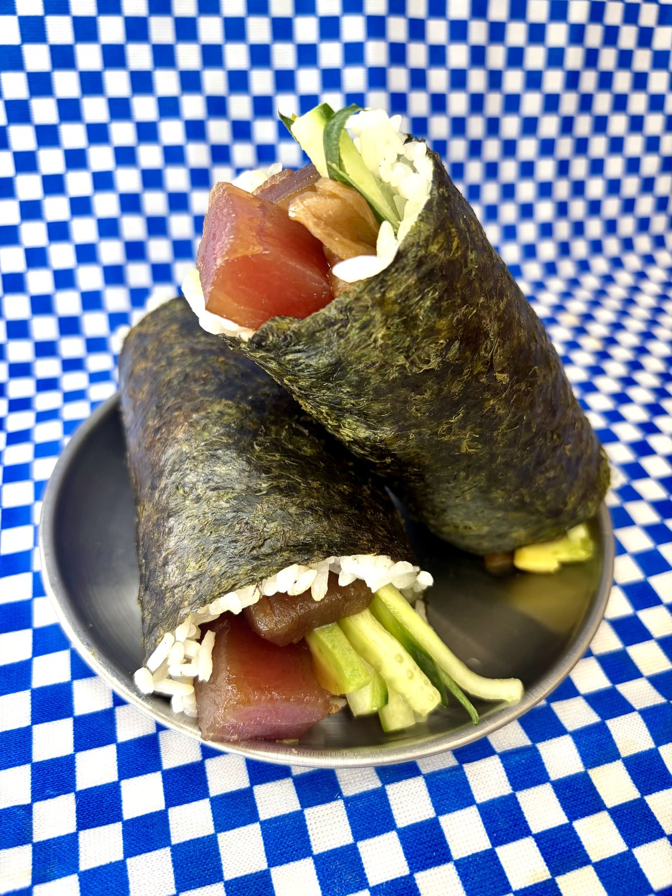
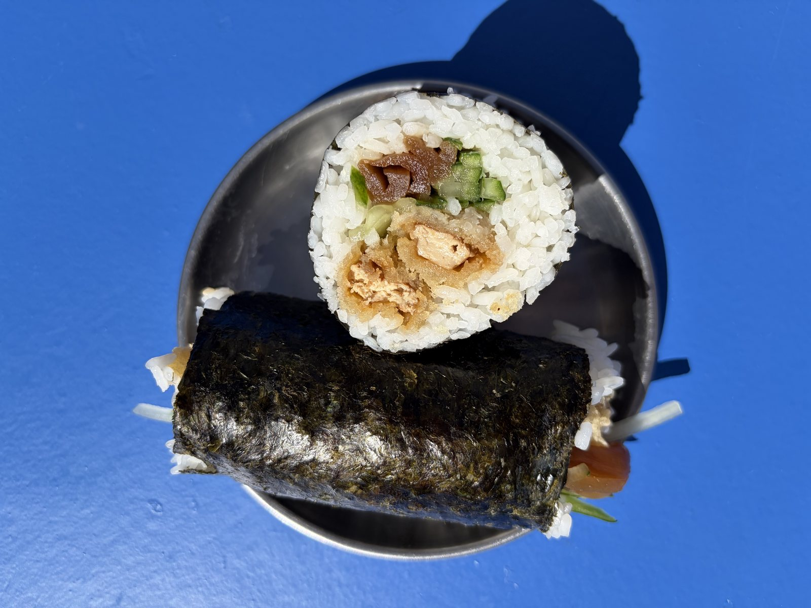
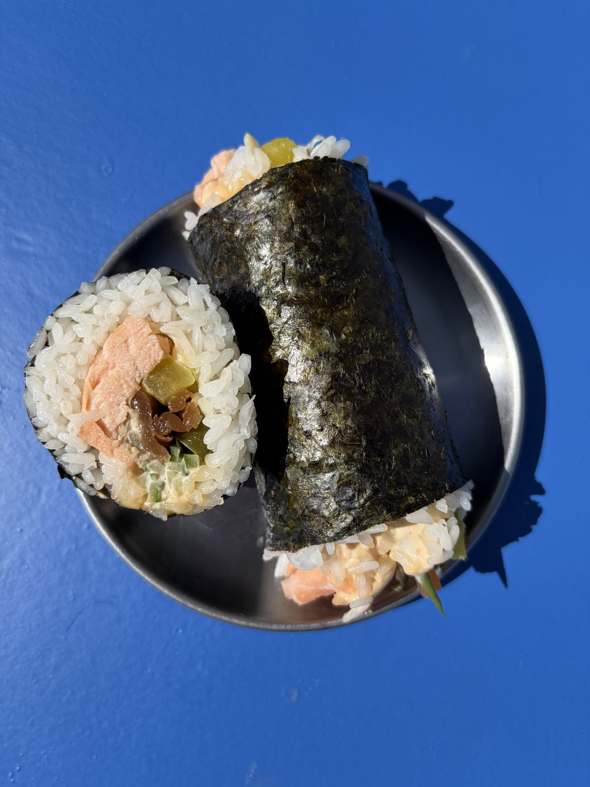
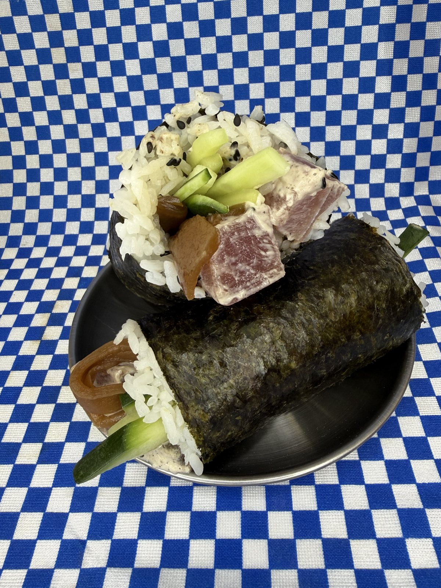
📍 Dirección
Avenida Atlántico 31, 11160 Barbate (Cádiz)
🥡 Para llevar o para aquí
Pide tu onigiri, handroll o poke y llévatelo a la playa.
🗺️ Google Maps
Cómo llegar
🍙 Carta digital
menu.oniguiris.es